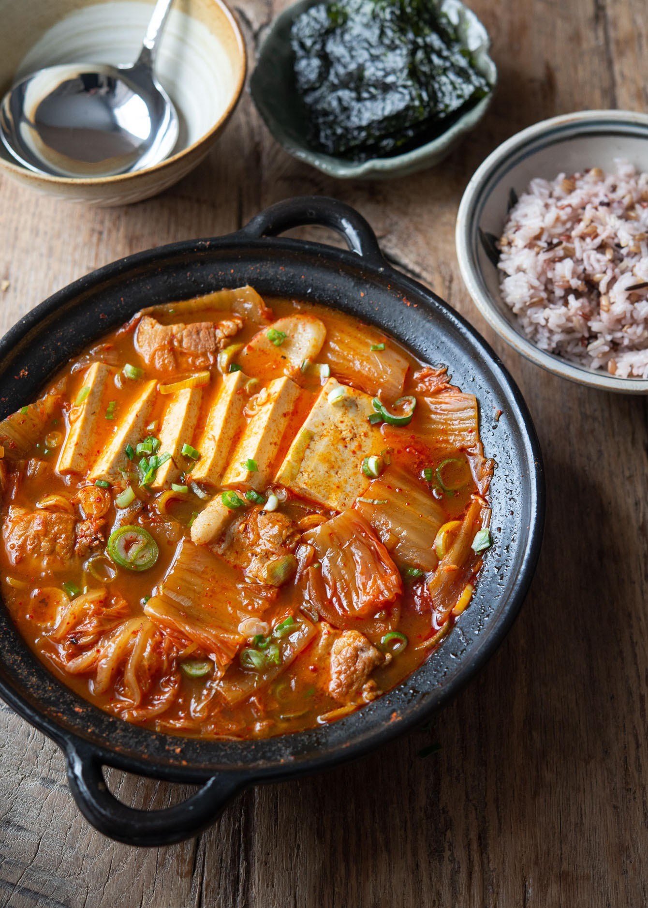

Dueji Kimchi Jjigae - Pork Kimchi stew
created by Adam Ryu (reference of Beyond Kimchee by Holly Ford)

Description:
Korean kimchi stew made with fatty pork and well-fermented cabbage kimchi, bring a warm, hearty, and tangy flavor of nostalgia.
Ingredients:
Essential
- Oil
- Sliced pork belly
- Onion
- Garlic
- Gochugaru (Korean chili flakes)
- Sour kimchi
- Kimchi juice
- Water
- Korean salted shrimp
- Gukganjang (Korean soup soy sauce)
- Soft tofu
- Green onion
- Salt
Optional
Steps to Prepare:
Meat Prep
- Heat oil in a pot over medium high heat. Add pork belly slices and cook through.
- Add onion and garlic, cooking for 1 minute.
- Add sliced kimchi, kimchi juice, water, and optional rice cakes. Cover with a lid and bring to a boil.
- Reduce heat to low and simmer for 15-20 minutes.
- Add salted shrimp and Korean soup soy sauce, then stir. Taste and add salt as needed.
- Add tofu slices and simmer for another 5 minutes.
- Garnish with green onion to finish and serve.
Congratultions! You have just made Dueji Kimchi Jjigae. Enjoy!